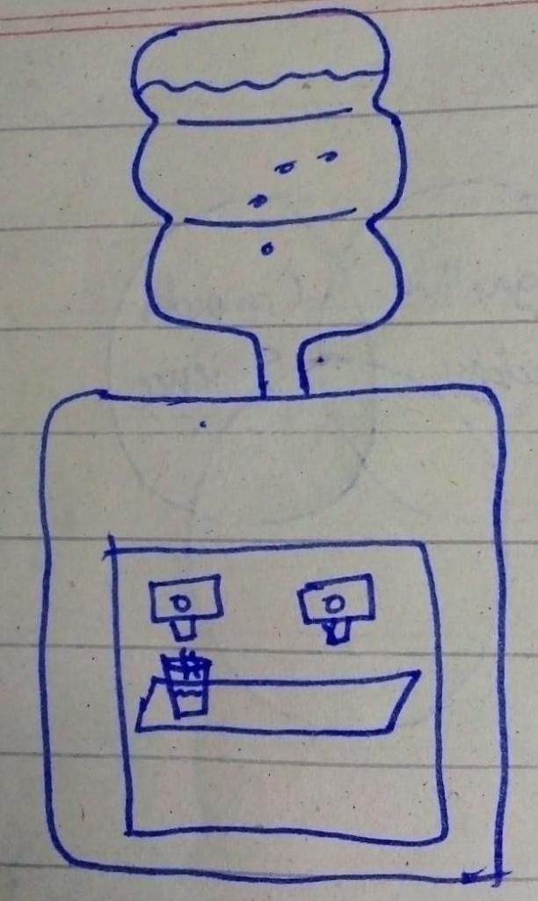
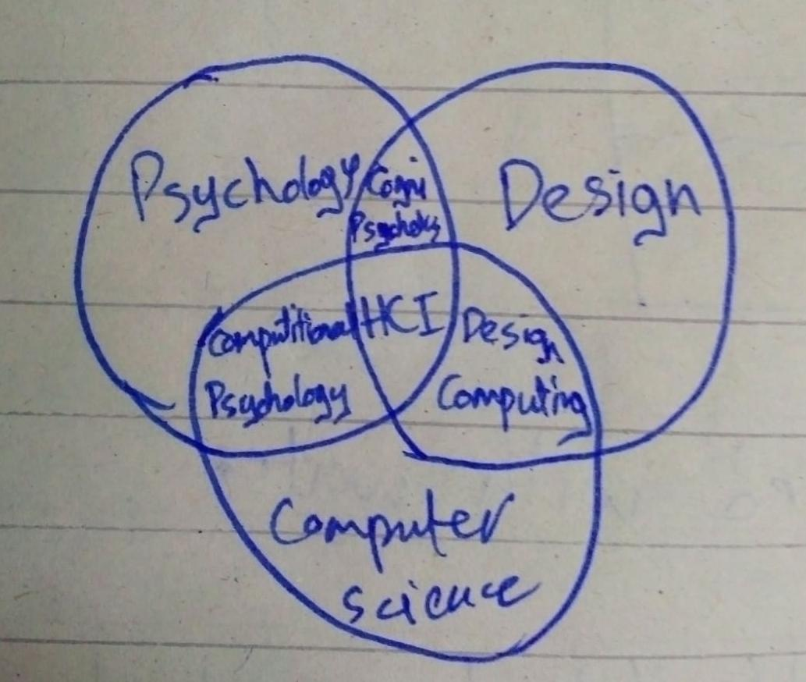
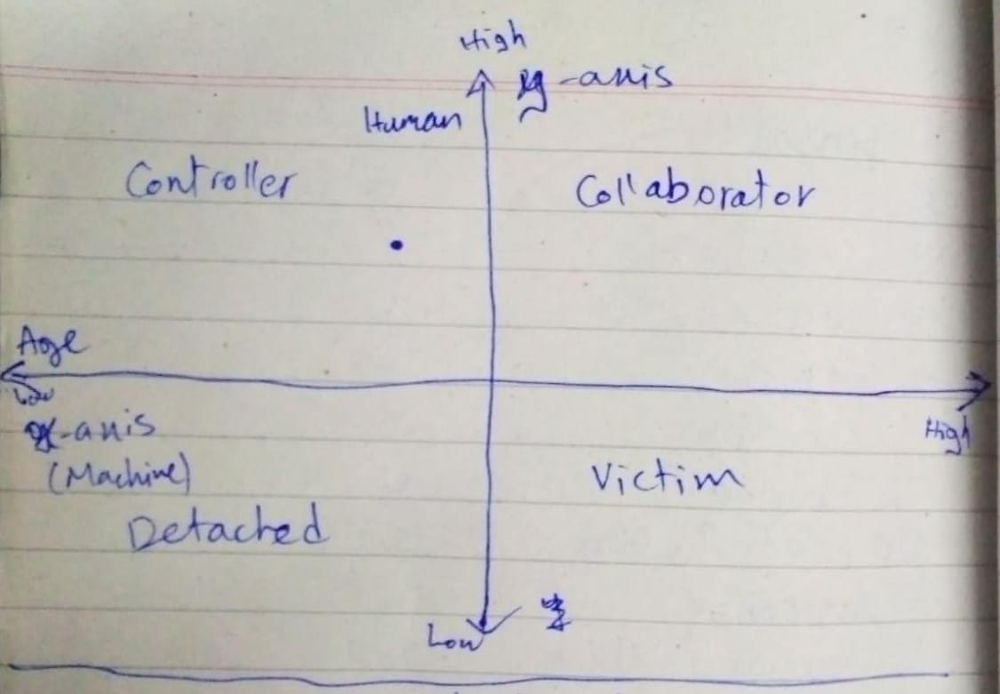
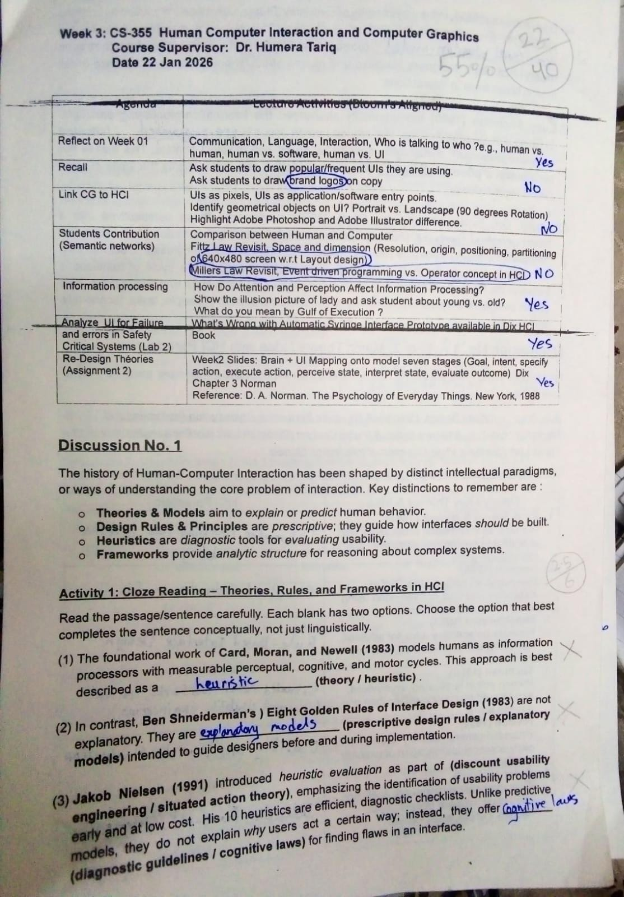
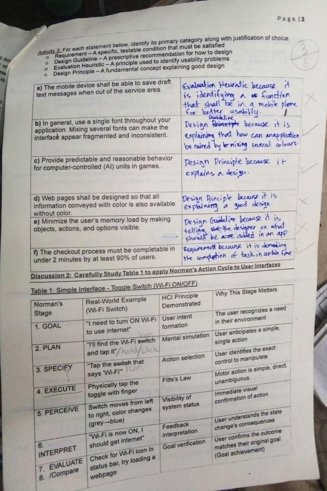
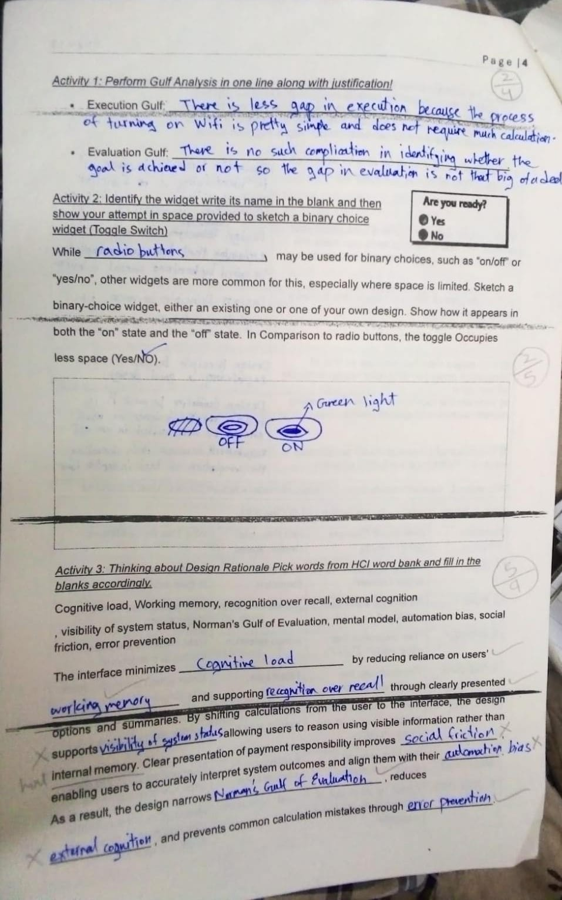
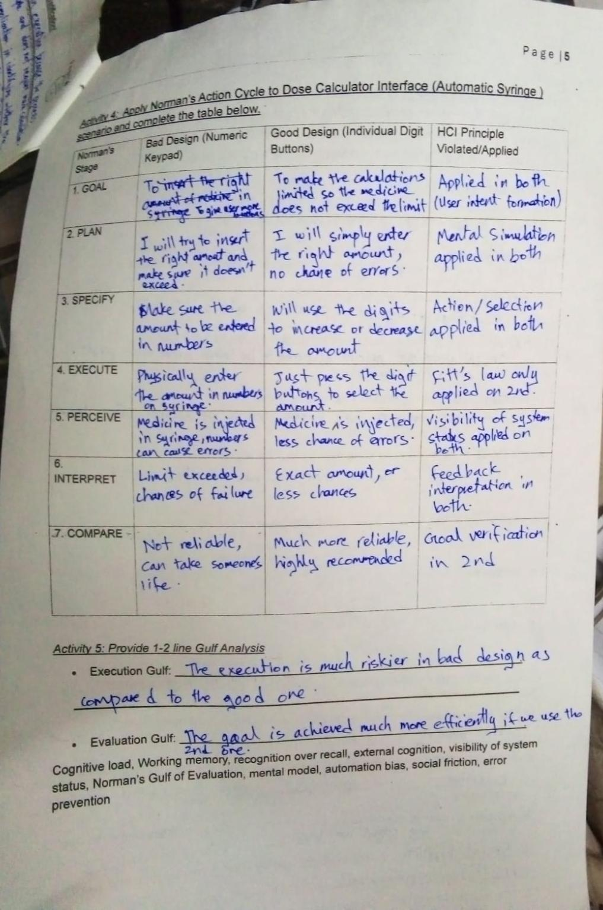
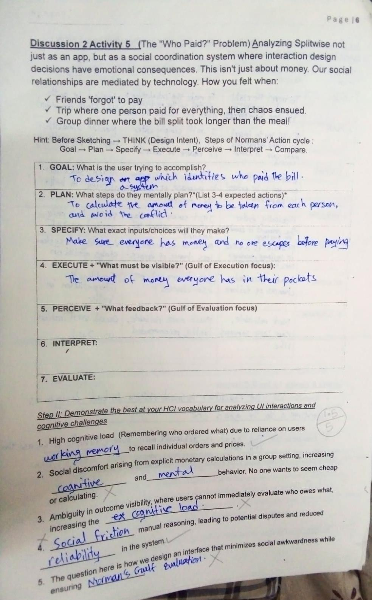

WEEK 1:
Human computer Interaction includes building a connection between these 3 fields.
- Cognitive Psychology
- Computer Science
- Design

My Perspective: This glass is half filled with water.
A unique perspective: This glass is half filled and half empty.
Attention.

Sketch of a dispenser
Sketch showing connection between HCI and different fields
Difference between UI and UX
- UI: User Interface
- UX: User Experience
Q) Write few interface examples which you experience in your daily life?
- GUI
- CLI
- Touch Based Interface
- Voice Based Interface
- Gesture Based Interface
My take from the graph(Human Process Model):
Human Process Model is same as CNN model which is the analogy between how human and computer receive and remember information then process it to store. This storage can be perceptual , short term, long term. It focuses on human mind.Second Graph:
Memory can be short term and long term. Sensors help in building up the memory. Sensors like our eyes help us in remembering whether the moment was iconic or not and our vision as well as our perception plays an important role.*) CNN is an AI model which generates images and videos.
WEEK 2:
Memory Type / Time
Sensory Memory = Sensible
STM = Seconds or milliseconds
LTM =For years
Chain Of Brain Process:
(Sense, Attention, Perception)- Attention is like filter, which allows some and block some.
- A lot of information we gain but brain allows some and block some.
- Machine learning's 3rd generation is Deep Machine Learning which is based on Deep Neural Network. This process function a lot like brain.
Chain Of Brain Process:
- Sensation
- Attention
- Perception
- Learning
- Memory
- Forgetting
- Thinking
- Problem Solving
- Reasoning
- Decesion Making
Donald Norman's Analytical Model:
This theory was proposed by Donald Norman called "Donald Norman Analytical Model". It is called 7 Stages of Action.

A graph explaining different states between human and computerWEEK 3:
Quiz
Page 1
Table 1 consist of Topics covered in first week Activity 1 Fill in the blanks
Page 2

Place correct HCI Paradigms
Page 3
Activity 3 Place right statement
Discussion 2: Apply Norman's Action Cycle on Toggle Switch Example
Page 4
Activity 2 Sketch of a toggle switch
Activity 3 Fill in the blanks using HCI Word Bank
Page 5
Apply Norman's Cycle to dose calculator Interface(Automatic Syringe) and it's gulf analysis
Page 6
Activity 5 To sketch a social coordination system to solve the "WHO PAID" problem by using Norman's Action Cycle
Fill in the blanks using HCI Vocabulary
WEEK 4:
My thought on what I expects from the teacher:
Whether the paper is easy or not, it is mandatory for me to work hard because teacher is already delivering her best. Exam will become easy automatically if I deliver my best.
Q) What are the common errors people do in HTML?
Ans) Forgetting to close tags, mixing of tags, incorrect tag nesting, etc
Activity: Incomplete...